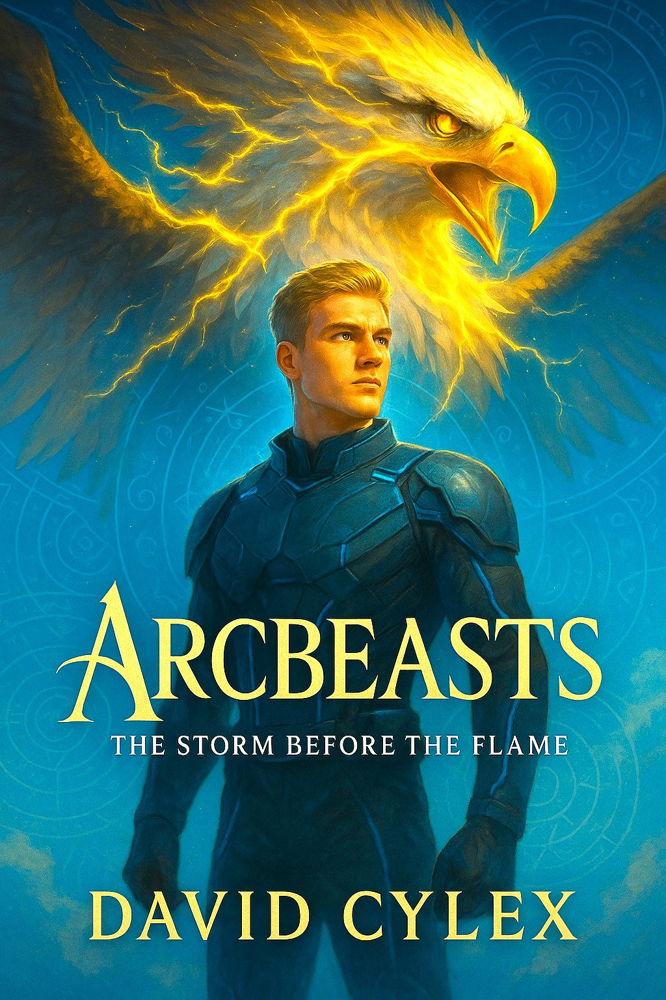

Books
Arcbeasts: The Arcane Bond

Kael Emberling didn’t choose the fire. It chose her.
In a tech fantasy future where every sixteen year old is bonded to a sentient creature known as an Arcbeast, Kael’s turn was supposed to be simple. But when her bond triggers a forbidden Thoughtbinder-class Arcbeast named Nyx, an ancient being thought extinct, everything spirals out of control.
Now labeled a threat to the system and hunted by those sworn to protect it, Kael is forced to question everything: the history of the Arcbeasts, the truth behind her own bond and the dark memories that begin to rise from deep within Nyx. As rival students, corrupt mentors and secret factions close in, Kael must decide whether to run from what she’s becoming... or embrace the power that was never meant to be awakened.
In a world of control, Kael is chaos. And chaos remembers.
Perfect for fans of Eragon, Fourth Wing and Shadow and Bone, Arcbeasts: The Arcane Bond is a soaring sci-fi fantasy epic of elemental war, forbidden bonds and the girl who learns the world doesn’t need a crown. It needs a fire that won’t go out.
Arcbeasts: The Storm Before The Flame
Every legend has a spark. This one was forged in the storm.
In a future rebuilt from ash and steel, teenagers bond with living war creatures known as Arcbeasts beasts of fire, storm, light and shadow, created to sync with human spirals and defend the fragile peace of the world.
Sixteen year old Valen Drayke has no legacy, no titles and no patience for politics. But when he’s bonded to Zephra, a rare Stormrider Arcbeast with a rebellious streak, he’s thrown into Unit Ten: an elite strike team tasked with exploring the unstable vault zones across the fractured frontier.
What begins as a mission of training and calibration turns into something far more dangerous. Vaults once thought dormant are waking. Spiral glyphs are shifting. And beneath the surface, an ancient design stirs, one that could unravel the Council’s grip on power and awaken creatures long thought extinct.
Together with a squad of misfits, rivals and one stubborn fire wielding team leader, Valen must navigate shifting alliances, airborne battles and the haunting call of a deeper bond he barely understands.
Before Kael Emberling.
Before the Arcane Bond.
There was the storm that nearly broke them.
Arcbeasts: The Storm Before The Flame is a cinematic, emotionally charged sci-fantasy epic of loyalty, sacrifice and skyborn legend, set in the world of Arcbeasts: The Arcane Bond.
Arcbeasts: The Seven Shards
Kael Emberling never asked to carry the key to legends.
The war should have ended. The seven shards should have stayed buried. But when Kael and her companions unearth the path to the Cradle of Thought, they awaken powers that were meant to stay forgotten.
Now hunted by Silas Murn and his growing army of chained Arcbeasts, Kael must lead her mismatched allies across broken kingdoms, from fire-scorched skies to oceans ruled by Tideweavers. Rival princes, fractured loyalties and beasts older than history will test them at every turn.
Silas seeks to bind the world in shadow. Kael seeks to break it free.
Only one truth will remain when the last shard falls.
Yet the greatest danger is not Silas. It is the truth waiting in the Cradle, an ancient force that could either save the Spiral or shatter it forever.
In a world of chains, Kael is the key.
And keys unlock more than doors, they set fire to empires.
Arcbeasts: The Seven Shards is a sweeping fantasy of elemental war, impossible choices and the girl who discovers that power is never given, it is taken.